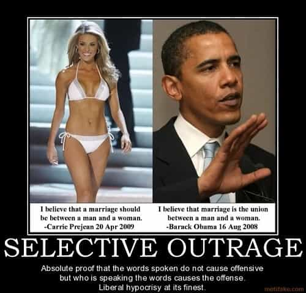

is an aspiring philosopher king, living the dream, travelling the world, hoarding FRNs and ignoring Americunts. He is a European at heart, lover of Latinas, and currently residing in the USA.


Milo Yiannopoulos, outrageous Trump supporter and free speech advocate, resigned from his putative job as technology editor for online news site Breitbart, after a flood of suspiciously timed attacks. What’s interesting about this story is not the man himself, but the coordinated efforts to attack and silence him. While the man himself is not particularly important to the story, a brief introduction is needed.
Yiannopoulos appeared on the national scene some time last year, and quickly gained notoriety for his controversial views, becoming wildly popular among a certain portion of the American conservative movement. His rapid rise to pseudo-fame and his background are a bit suspicious.
Indeed if it was discovered the half Jewish, flamboyant, gay character was a plant by elites to further accelerate the degeneracy in the culture wars, I would not raise an eyebrow. He’s an odd and suspicious public character, reminiscent of Sacha Baron Cohen’s Bruno. The fact that college Republicans throughout America cheered this bizarre man who wears flashy jewelry and indoor sunglasses, while making crude references to African male penises, and viewed him as their political hero, is confusing and odd, to say the least.
Milo is no more absurd than Bruno. Is he even real?
Amongst the oddities are that while he was purportedly a “technology editor” for an alt-right political website, I never once heard him speak of technology, or saw any technology articles penned by him or anyone else on the site; if there are any technology articles even present at Breitbart, they are not readily apparent by browsing the front page or any of the “trending now” topics on the site. And the website is known for reporting Republican-leaning news and politics—why someone would turn to them for technology news is anyone’s guess.
Yiannopoulos is openly gay, in a way that would make even mainstream liberals from 15 years ago wince. He’s not just openly gay, but enjoys public vulgar, perverse, gross descriptions about the type of homosexual acts he enjoys and glorifies promiscuity and his crude sexual preferences. His college tour of 2016 was named the “Dangerous Faggot” tour, and he was somehow able to get college Republicans—the stuck up types who wear LL Bean and sport Richard Spencer haircuts and play polo on the weekends—to cheer and howl at him as he was carried into the room like royalty by bare chested muscular men.
How cucked must one be to carry in a gay man on a throne?
Yiannopoulos first came to my attention in a talk at University Massachusetts Amherst, where he, first wave feminist Christina Sommers, and an angry Steven Crowder gave birth to the wildebeest known as Trigglypuff. When a feminist, a faggot, and a Youtuber who dresses in drag are too right wing for the college kids to handle, you know we have reached peak stupid.
6/10 on 2017 US scale, WNB
Yiannopoulos is intelligent and well spoken, but these two things are not enough to deserve the level of attention and power he received.
He has attacked Gamergate, fourth wave feminism, Islam, social justice, political correctness, the rape culture myth, and has advocated for free speech. He was banned from Twitter last year after aggressively criticizing the female Ghostbusters flop. And in February, 2017, two years after taking a job there, he either resigned or was forced out of his purported real job, as technology editor of Breitbart.
The truth is true regardless who says it.
What’s suspicious and disturbing is not that that this man’s 15 minutes of fame are up. While I did chuckle at hearing him present the entirety of a speech in 3 words: “Feminism. Is. Cancer.” and seeing the rage he would trigger in obese, shrapneled and graffiti-ed husks of SJWs, I’m happy enough if I never see or hear him again. I’m curious who funded all these campus visits, and if the man is even truly gay, or is just using an absurd caricature in order to make even more absurd and degenerate statements. But the real story here is a closely coordinated attack against the man that suddenly hit over President’s Day weekend.
I suddenly feel the urge to purge.
He had been granted a $250,000 advance for a forthcoming book, had finished his campus tour, and was at the nadir of his fame, when suddenly his book deal was cancelled, his job terminated, his invitation to speak at the American Conservative Union’s annual CPAC convention was revoked, and he was accused of being a pedophile. And the reason for this outrage was a typical (for him) comment he made in a youtube video over a year ago. The timing and the faux outrage make little sense.
What $250,000 looks like
This is a man who does not hide his perverse and disgusting views. He openly talks about graphic sexual things, that of course are totally inappropriate if one is a straight male, but in this politically correct atmosphere his gay victim card allowed him to regularly discuss his craving of black men’s privates, thanking the man who took his virginity for giving him excellent fellatio skills, and advocacy of a hypersexual promiscuous lifestyle of drugs and sex.
He regularly refers to Donald Trump as “Daddy” in a not-so-thinly veiled sexual reference, has an “anti-white bedroom policy,” travels to college campuses teaching children about his “Faggotry” and compared Ghostbusters actress Leslie Jones to an ape.

And yet the powers that be suddenly converged over President’s Day weekend, right after Yiannopoulos appeared live on HBO’s Real Time program with a viewership of over 2 million, to revoke his pussy pass. Was the appearance on mainstream cable TV going too far? Were the powers that be scared that he had been too successful with the media access they had granted him? Was this merely at attack on anyone affiliated with the alt-right, the new enemy of Republicans and Democrats alike?
Speaking truths like this is truly Dangerous
I can’t explain his character assassination any more than I can explain his appearance in the first place. But I do know the magical convergence of Simon & Schuster book executives, CPAC convention planners, his bosses at Breitbart, and the mainstream media who coordinated a pedophilia attack piece on him, simultaneously over a 24 hour period, stinks worse than the rear end of a man who does all the sick things Milo advocates.
The idea that Simon & Schuster execs suddenly decided that this Dangerous Faggot is too sexual for them, and they will just forfeit the quarter million dollars they fronted him because he mentioned some gay perversity that made them uncomfortable, is ridiculous.
The title of his book was “Dangerous” and it came on the heels (or shall we say rumps) of the Dangerous Faggot tour, from a guy who openly praises interracial gay promiscuous sex. But suddenly these execs grew a conscience over President’s Day weekend, and decided that their earlier decision to front him a quarter million dollars before he even began his book, was in hindsight a bad idea for an unproven writer, and that they should just scrap the whole project and perhaps start a new policy to be a little less generous on six figure book advances to controversial unproven authors.
The American Conservative Union has already had Milo speak at their CPAC convention before, and had invited him to return in 2017. But again, they had the same epiphany over President’s Day weekend, perhaps as they reminisced over President Thomas Jefferson having interracial relations with a slave, or on the accomplishments of our first interracial President Obama, that they simply couldn’t take another popular speech from the charismatic interracial-sex advocating Faggot.
And Breitbart, who has exactly one employee that anyone can name (Milo) decided that while they had no problem employing him during his two years of open faggotry and debauchery, that after President’s Day it was now bad for their image and they are going to stick to hiring people who more fit the image of a College Republican.
Then I told him we’d have to cancel his book because he’s too provocative!
What is the absurd reason these groups all give for suddenly having a change of heart? After celebrating their President’s Day parade, followed by a humble pie eating contest, they all must have logged on to Youtube at the same moment and looked up a year old video where Yiannopoulos talked about the age of sexual consent laws (16 in the UK and 16-18 in the USA) and how they are “about right” in his mind.
If you’re not triggered yet, the outrage is supposed to occur because he is insinuating that many men prefer to have sex with those at the younger range of the legal age. And just as we are attacked at ROK by repeating this biological fact about younger adult women, Milo is attacked when making it about adult gay men.
He’s not even stating that he prefers young men! Only that as a whole, younger sexual partners are preferred in many relationships. This is not rocket science.
Yiannopoulos also made some cringe-inducing statements about “men and boys” getting together, but later clarified that he shouldn’t have used the word “boys,” as that is gay slang that can easily be misinterpreted (when I refer to picking up girls, I don’t mean schoolgirls), and reinforced he believes more or less in the current ages of consent.
People are not human, and make mistakes all the time, including in their speech. I’m in favor of giving people the opportunity to explain their ideas, rather than staunchly defend every statement that they have ever made. For example, I do not think for a minute that President Obama believes there are 57 U.S. States.
So one can choose to believe Milo is being honest, and that he prefers adult homo relationships with black gay men. Or one can believe he is lying and secretly wants to diddle children. Or one can not care about this degenerate and his message. But to me, he does come across as rather genuine in his convictions, so I’ll go with the former option, with a hearty mix of the latter–not caring about this degenerate and his message.
And anyway, nothing he said was more disturbing as his typical shtick. He said far more disturbing things in his appearance on Joe Rogan Experience #702 in September 2015, which racked up over one million views.
Lena Dunham, WNB
Despite the hypocrisy of Lena Dunham, who falsely accused a man of rape and published a book where she admitted to sexually assaulting and committing incest with her sister, the media says not a word about her but attacks and falsely accuses Milo, a victim of sexual assault who has identified 3 sexual predators to authorities, (as he rightly points out, 3 more than most of his critics) for merely discussing the idea of sexual relations and sexual assault.
Milo appeared bulletproof. He held so many victim cards. Immigrant. Mixed race background (English/Greek). Single parent upbringing. Gay. Literal (Hitler) victim of sexual assault. And yet in the end he was attacked anyway, and not for plagiarism or fraud or financial crimes. He was attacked for the very thing that anyone who has ever heard of him already knows about him. That he holds some degenerate sexual beliefs.
The fact that Milo advocates for victims of sexual crimes matters not. Roosh could volunteer at a Rape Crisis Center every night and spend his evenings creating pamphlets teaching men how to ask for consent before flirting with women, and it wouldn’t have made anyone think twice about creating false rape allegations to attack him. There is no moral center for these people.
In the end, I don’t hold much sympathy for the guy himself. If he made money, he made it primarily through this new financial economy where being famous is a career, and one operates at the whims of the powers that be. If he has talent other than being a well educated, well spoken degenerate, then he should have no trouble making a fine life for himself. And he has enough notoriety that he should continue to benefit from the fame game that should allow him to bed whomever it is he likes to bed.
He likely knew this false economy could come crashing down at any moment, and perhaps he saw this and actually resigned of his own accord, before the inevitable firing. If he has anything interesting to say, other than mocking and deriding SJWs, he can say it without Simon and Schuster. But regardless of what happens to this man, this is a further chapter in the book of crooked and controlled media and power interests. Trust nothing from these charlatans.
Read More: Why Are Men Paying New Car Prices For Used Women?